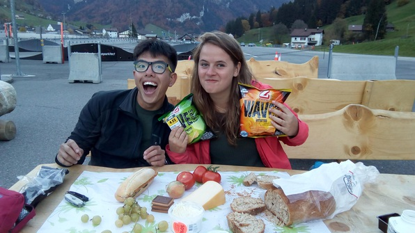

This day was really cool! Simon organized a hike to Milchsee-Frutt (4 lakes hike) :D My bag bursting with tasty goodies, I meet the crew at the HB and board a train. I’ve invited Michael from the challenge run :D He immediately friendifies all the Culmann people, which is awesome.
After some fitful sleep on my part, we arrive at the station, and board a cable car to take us to the hike start:
Immediately when we start walking, Gideon starts chugging beer–he brought 6 beers, and only 6 beers, in his pack.
The hike proceeds peacefully; chat with Anna and some of the others.

At some point, Michael and I start singing. He’s a Malaysian dude and apparently people sing all the time in public there, often socially–he was really surprised nobody does that here (except me) Make it through almost all the verses of “Misty Mountains”.
Ascend into beautiful meadows. Have some great conversation with Harris, a serious geek, about economics. (He wants to go into economic theory and maybe the theory of tax incentives.)
After a while, we break for lunch. Gideon and Simon and I “swim” in a brutally cold lake–I can’t stay in for more than the 15 seconds it takes me to get in and out. Then we hang and chow stuff. The grass is all wet but Anna lends me half of her jacket to lie on; we chat for a bit about random things (the program she uses to pirate movies) and then I nap. I get pretty badly sunburned, but it’s nice.
We move on, stop at a cool rock formation
Then Anna, Michael and I decide to plow straight up the really steep valley side while the others go on. We scrabble our way up the hill, me schlepping my pack with my laptop (yeah, I thought I could do hw, go figure). It’s exhausting and exhilarating!
I make a paper airplane and we chase it across the hill for a while. Eventually hurl it off a cliff–it promptly runs back into the cliff side and gets stuck :P
After a long treacherous hillside traverse, we make it back to the trail.
We can’t catch up to the others, so we take our time. Eventually catch a cable car down, then another one. (Michael stays behind and elects to walk down) By the time we’re all the way down, Simon and the others are literally just about to run and catch a train. Anna and I have the Gleis 7 so we need to wait until 7 to catch our free train. So we make a legendarily efficient raid on the town’s Coop. We get cheese, bread, onion, tomato, two varieties of spicy chips, milk, grapes, chocolate, and a sandwich for Michael for $20, grab a sheet of plastic intended for flowers for a plate, and head back to the trailhead. Meet Michael just as he comes down and have an incredible picnic. Just on fleek, the food is so good.

Catch the train back. Somehow end up in Lucerne on the way, and there’s a festival on, so we go in and, at Michael’s recommendation, get some amazing spiced wine (Glühwein rot). (I also get myself a beer and some more amazing grapes for the last leg). What a fun ride!
Back at Culmann, hang downstairs for a bit and crash!